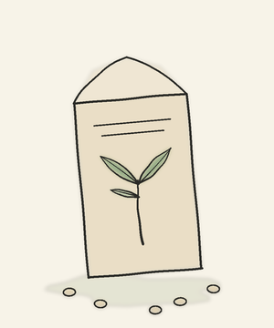
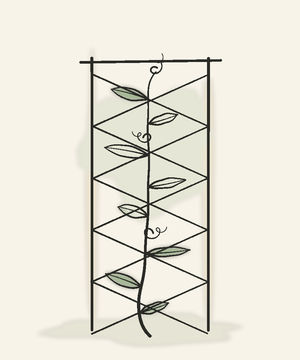
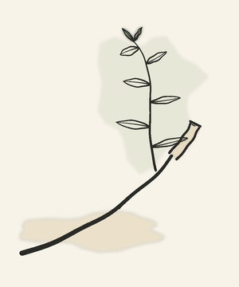
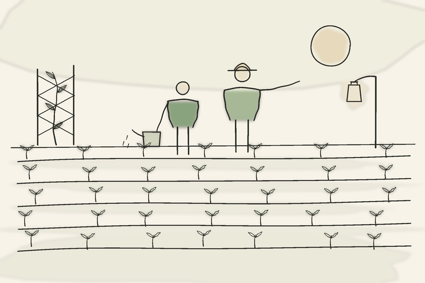

Governance as Code
Dept. ICompliance checks embedded in production pipelines as testable, versioned code.
Ship Safe AINever Unsafe AIPolicy as Code
Before you ship, while it runs, when it breaks — governance as code that makes AI safe to say yes to, built in the open by a community keeping the garden of humanity growing. Come see. Come join.
Departments of the Season
Every safe garden keeps the same calendar: sow with care, tend without ceasing, prune and grow back stronger.

before you ship

while it runs

when it breaks
From the Catalog
Four slips, no postage necessary. Tear along the dotted line.
Or schedule a call with a community leader · explore Beacon & Umbrella in the open
The Garden Rails
A commons only stays green because somebody waters it. Two ways to pick up the can:
Index of Principal Subjects
What this almanac is actually about, numbered the old way.
Compliance checks embedded in production pipelines as testable, versioned code.
Closing the gap between governance policy on paper and reality in production.
Regulatory alignment that scales with deployment — not against it.
Practitioner-led tools and open standards built by people who ship to production.

The Keepers of the Garden
Together, advancing responsible AI governance for organizations navigating the evolving AI landscape.
— from the potting shed, with candor
Implements of the Trade
Every almanac lists its implements. Ours sign their work.
scanner & evidence signer
Sweeps what you ship and signs what it finds.
human-carried CLI companion
The light you carry down the row at night.
governance compiler · 40+ frameworks
Compiles the rulebook so the garden ships in any weather.
Evidence · Signed & Chained
The Weekly Dispatch
Weekly on Substack. No weeds, ever.